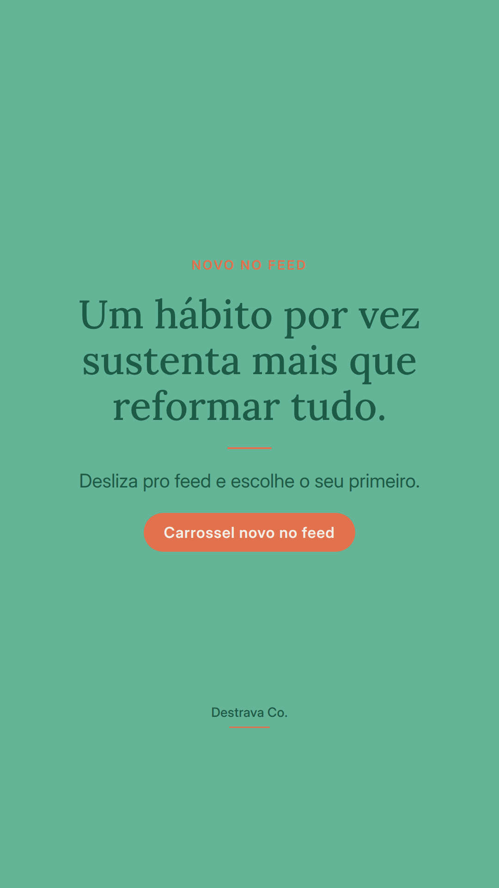
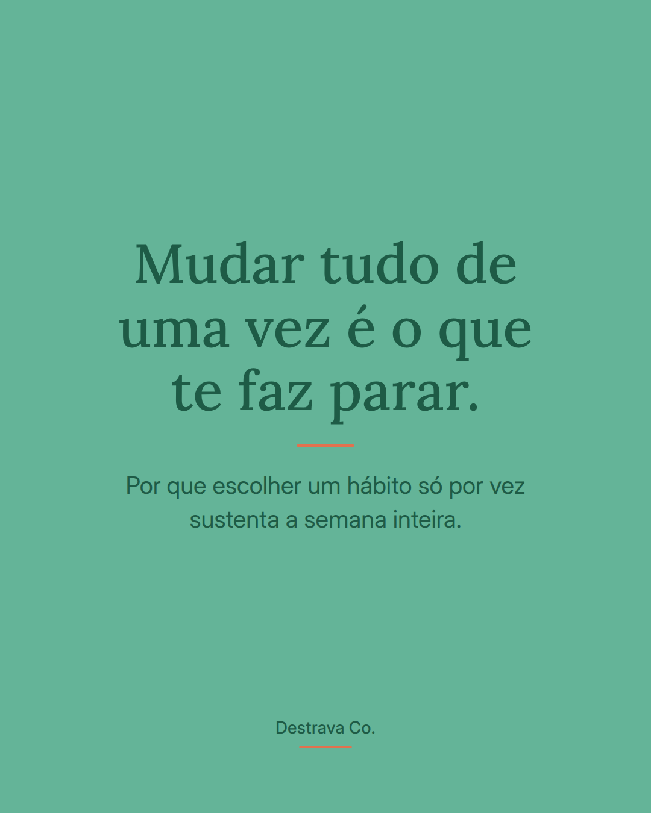
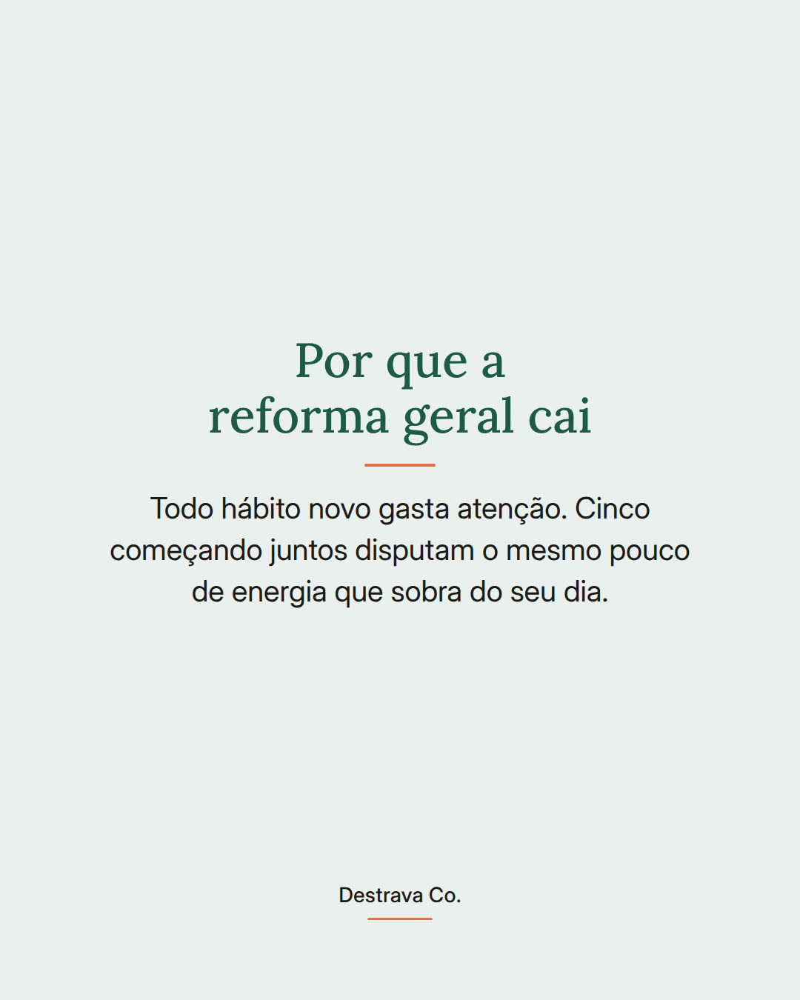
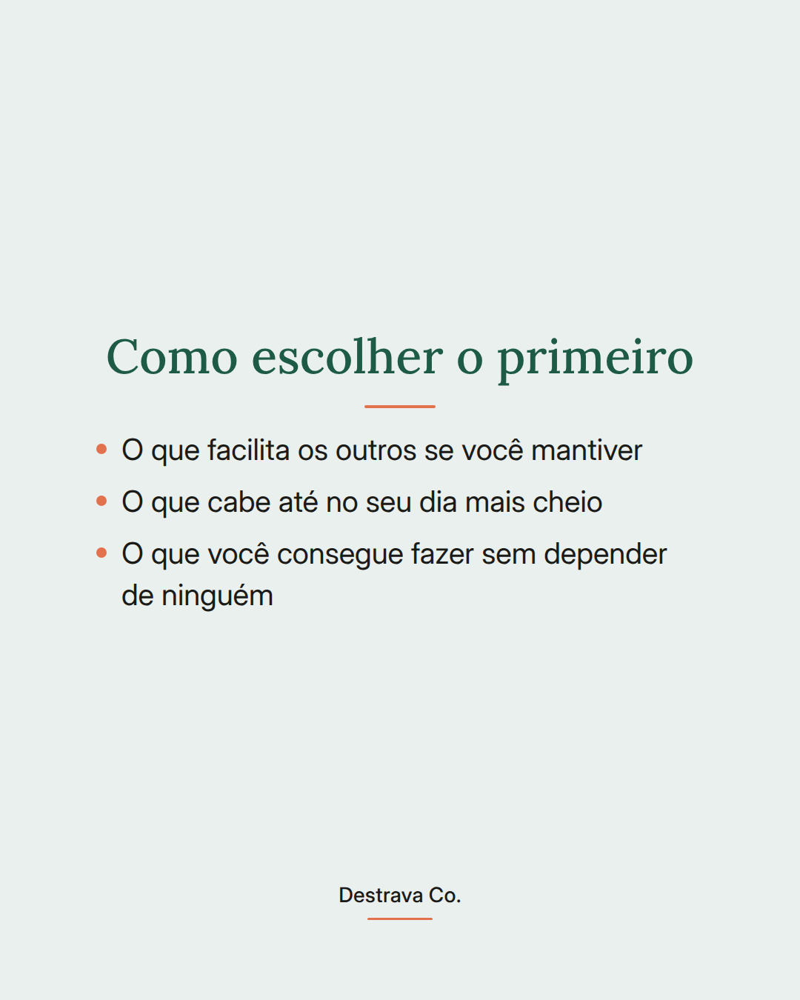
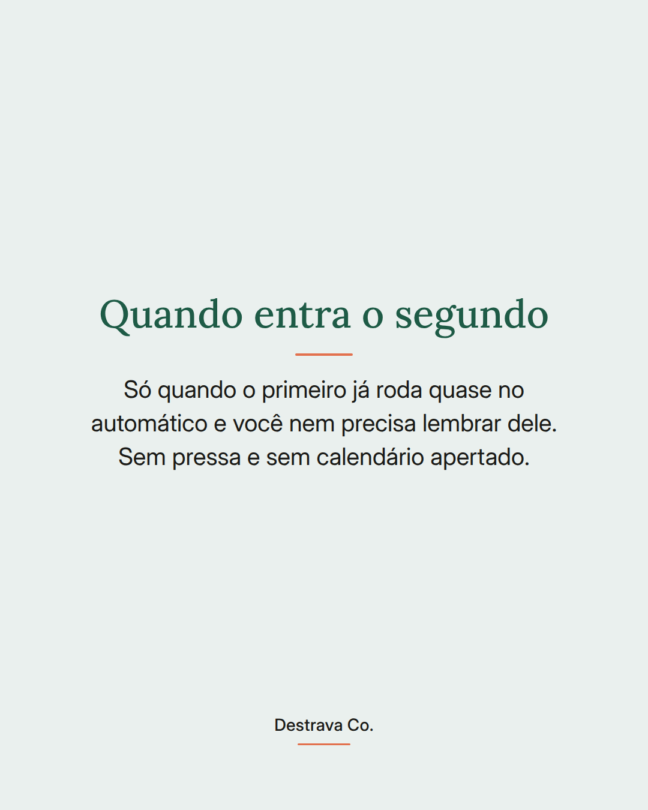
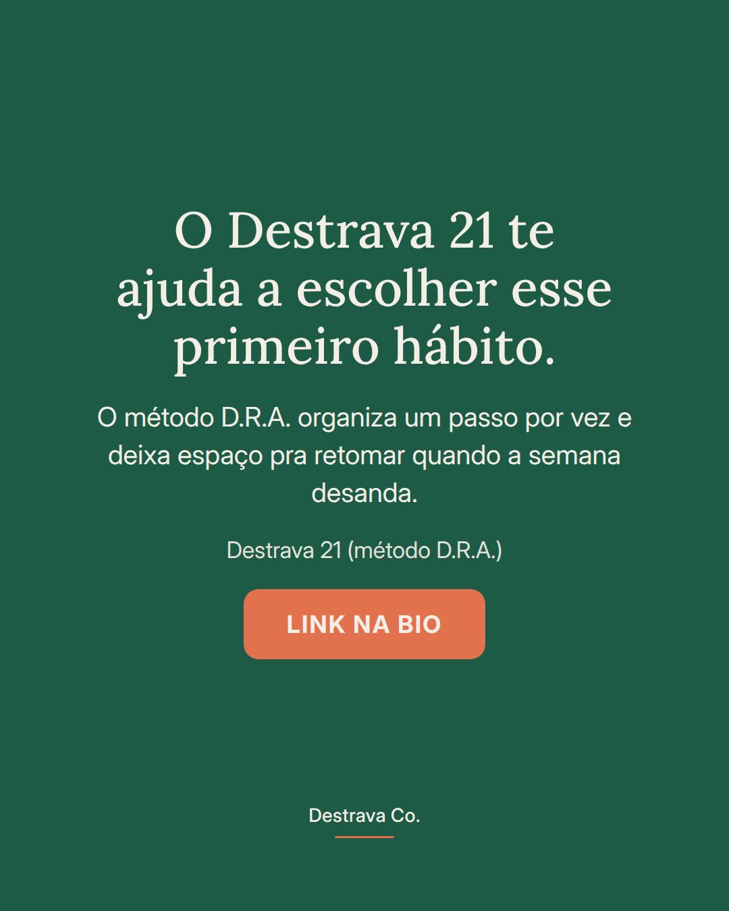

Mudar tudo de uma vez é o jeito mais rápido de parar no meio da semana.
Hábito novo gasta atenção, e atenção é justamente o que está curto numa rotina corrida. Quando você começa cinco coisas juntas, elas competem entre si e nenhuma vira automática.
Escolher um só parece pouco, mas é o que sobrevive ao dia bagunçado. Pega aquele que facilita os outros, que cabe até no seu dia mais cheio e que não depende de mais ninguém pra acontecer.
O segundo entra depois, quando o primeiro já roda quase sem você pensar. Sem pressa.
Salva pra lembrar na hora de recomeçar e manda pra uma amiga que também quer mudar tudo de uma vez. Se quiser um caminho pronto pra isso, o Destrava 21 está esperando no meu perfil.